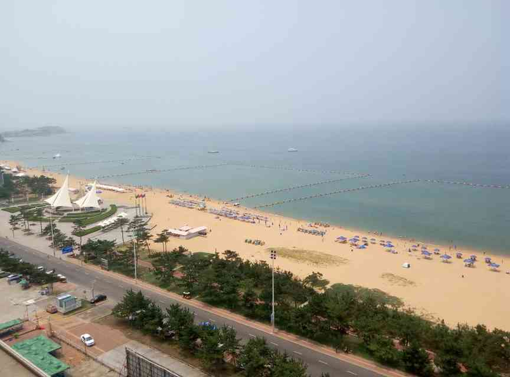
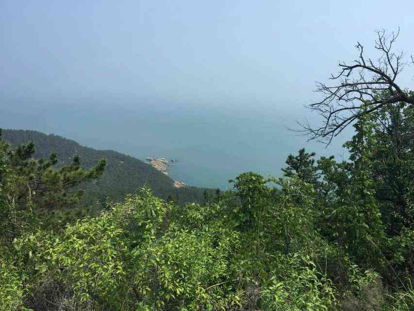
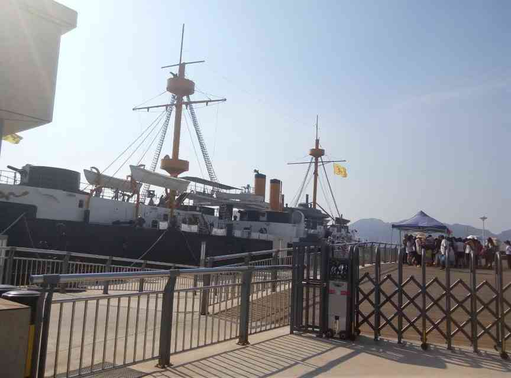
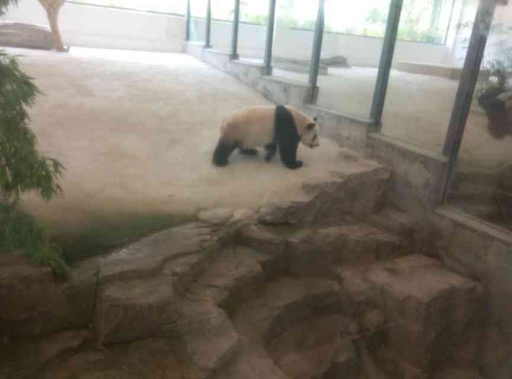
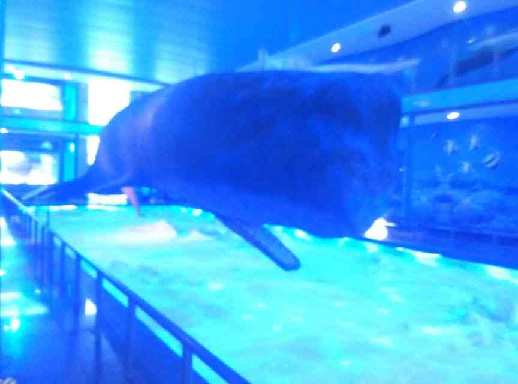

人在旅途之
--威海三日游

沿途取景:
威海环境优美，气候宜人，本次游历，途经刘公岛风景区，定远舰模型，大熊猫馆和抹香鲸展览馆等景区，风景优美，人文荟萃，是旅游度假的好去处，下面，让我来带领大家一起来看一看吧～

刘公岛

定远舰

大熊猫

抹香鲸
威海
威海，是山东省地级市，位于山东半岛东端，北、东、南三面濒临黄海，北与辽东半岛相对，东与朝鲜半岛隔海相望，西与山东烟台接壤。东西最大横距135公里，南北最大纵距81公里，总面积5797平方公里，其中市区面积777平方公里。海岸线长985.9公里。辖环翠区、文登区、荣成市、乳山市。
刘公岛
刘公岛位于山东半岛最东端的威海湾内，人文景观丰富独特，既有上溯千年的战国遗址、汉代刘公刘母的美丽传说，又有清朝北洋海军提督署、水师学堂、古炮台等甲午战争遗址，还有众多英租时期遗留下来的欧式建筑，素有“东隅屏藩”和“不沉的战舰”之称。
定远舰
“定远”号战斗舰/一等装甲舰（steel battleships）造价620万马克（折合37万英镑），属定远级战斗舰，由清朝委托德国坦特伯雷度（该地二战后划归波兰，现名什切青（Szczecin））的伏尔铿(Vulcan)造船厂建造的7000吨级的一等铁甲舰。分别为定远号及镇远号，为北洋舰队的主力舰。
大熊猫
大熊猫（学名：Ailuropoda melanoleuca，英文名称：Giant panda），属于哺乳纲、食肉目、熊科，是大熊猫亚科和大熊猫属唯一哺乳动物，体色为黑白两色，它有着圆形脸颊，两个大黑眼圈，壮硕的身体，标志性的内八字行走方式，也有解剖刀般锋利的爪子。
抹香鲸
抹香鲸（学名：Physeter macrocephalus）：头部巨大，下颌较小，仅下颌有牙齿。主要食乌贼。体长可达18米，体重超过50吨，是体型最大的齿鲸，头部可占身体的1/3，无背鳍；潜水能力极强，是潜水最深，潜水时间最长的哺乳动物。体型似鱼，用肺呼吸。颈短，头似与躯干相联；颈椎愈合；鼻孔为喷孔，位于吻端，前肢成鳍，前臂退化，掌部变长，趾数增加，但从外部看不出趾和爪；后肢退化；尾似鱼，有水平尾鳍，游泳靠尾挥动。
 威海，是山东省地级市，位于山东半岛东端，北、东、南三面濒临黄海，北与辽东半岛相对，东与朝鲜半岛隔海相望，西与山东烟台接壤。东西最大横距135公里，南北最大纵距81公里，总面积5797平方公里，其中市区面积777平方公里。海岸线长985.9公里。辖环翠区、文登区、荣成市、乳山市。
威海，是山东省地级市，位于山东半岛东端，北、东、南三面濒临黄海，北与辽东半岛相对，东与朝鲜半岛隔海相望，西与山东烟台接壤。东西最大横距135公里，南北最大纵距81公里，总面积5797平方公里，其中市区面积777平方公里。海岸线长985.9公里。辖环翠区、文登区、荣成市、乳山市。